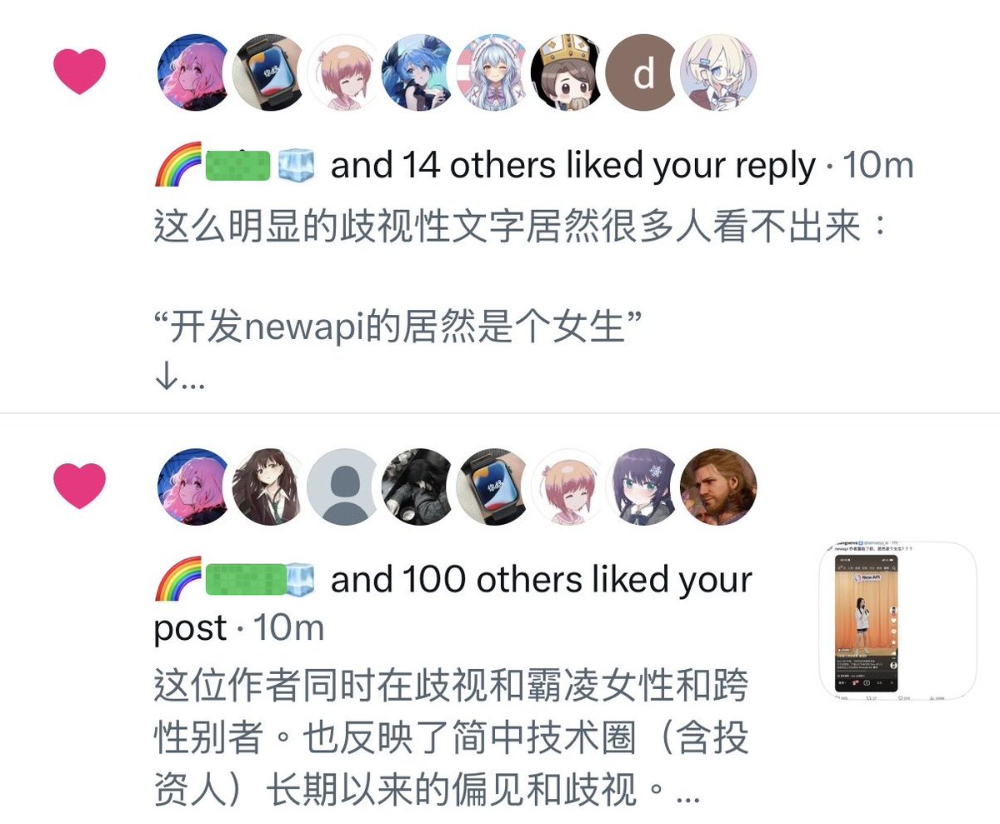
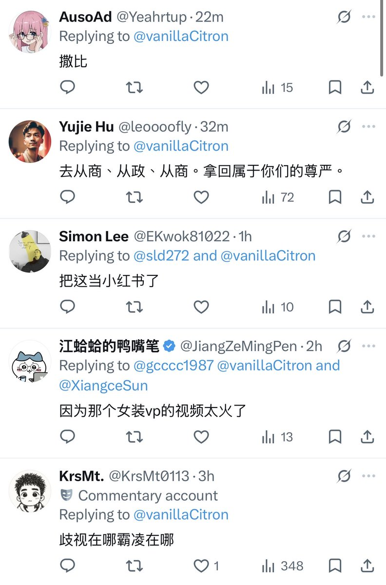
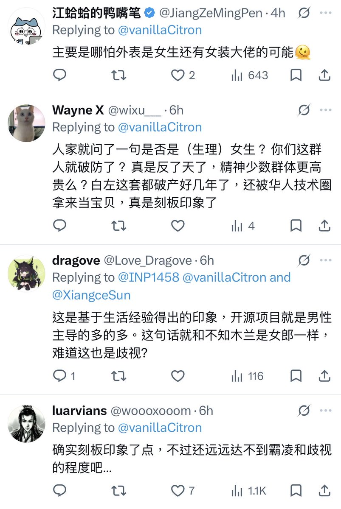
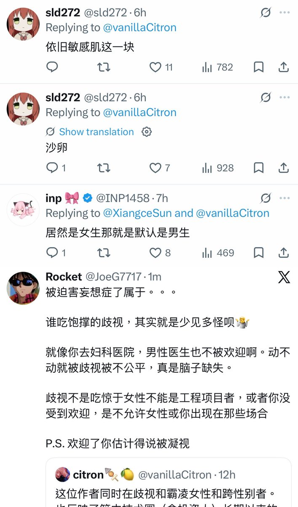

青空 しょな
@seikuushona
RT @vanillaCitron: 为什么在互联网上遇到你支持的观点，你应该评论，而不只是点赞。
因为在当代社媒App的设计中：点赞散发的善意是被折叠的，而恶评散发的仇恨是被展开的。通过点赞传达给内容创作者的支持，其能量是远远不如恶评者散发的恶意多。
因此，通过善意评论来…




citron🍢🍋
@vanillaCitron
为什么在互联网上遇到你支持的观点，你应该评论，而不只是点赞。
因为在当代社媒App的设计中：点赞散发的善意是被折叠的，而恶评散发的仇恨是被展开的。通过点赞传达给内容创作者的支持，其能量是远远不如恶评者散发的恶意多。
因此，通过善意评论来稀释恶意，并让创作者感到被支持，是特别必要的。 https://t.co/CAOU7knSCI https://t.co/QXTHDJ286q